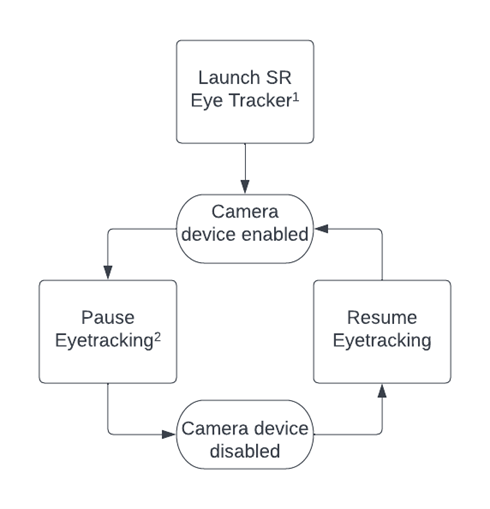
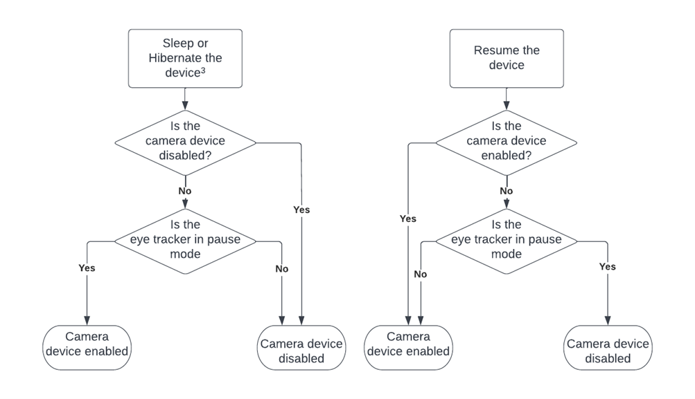
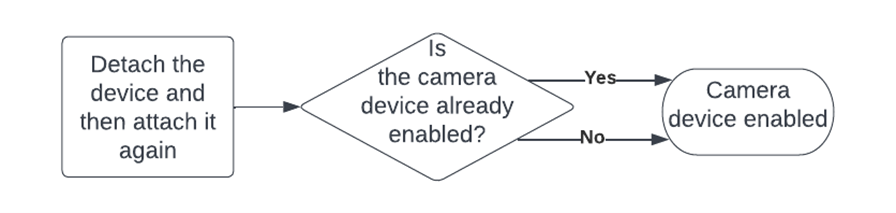
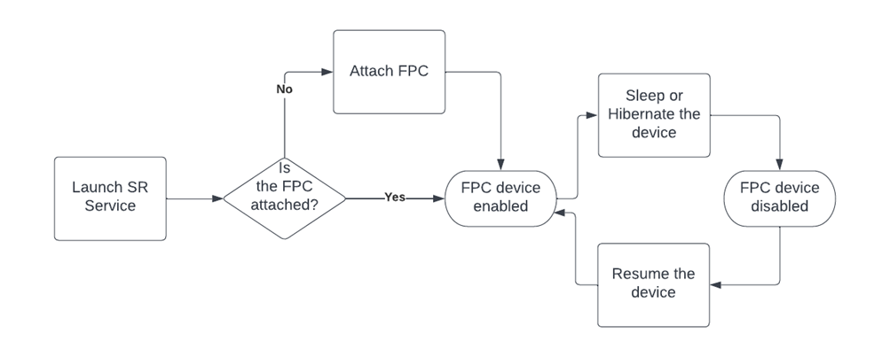

|
LeiaSR SDK 3e4093ae v1.34.8.37806 2025-10-23T12:33:42Z
Stable
|
|
LeiaSR SDK 3e4093ae v1.34.8.37806 2025-10-23T12:33:42Z
Stable
|
This chapter will describe various scenarios that can impact the LeiaSR camera device being enabled or disabled. Each section will contain a flowchart with some added information where required.
Note, Realsense cameras are always enabled. The rest of the document describes the behavior of media foundation cameras.
Figure 1 describes the main loop of the eye tracker. Launching the eye tracker will enable the camera device in case it was disabled. The eye tracker will always launch in pause mode. When an application is launched that requires eye tracking, we resume the eye tracker and enable the camera. The eye tracker will be paused again when all applications that require eye tracking are closed.
Installing the LeiaSR platform gives the same behavior as starting the eye tracker.

Sleeping or hibernating the device have the same behavior so they are grouped together. In general, putting the device to sleep will disable the camera. Resuming the device will restore the state of the camera device as it was before putting the device to sleep. The full behavior is described in Figure 2.
However, as noted before2, if the camera device is already enabled and the eye tracker is in pause mode when the device is put to sleep, the camera will stay enabled.

Stopping the LeiaSR service shows the same behavior as when we put the device to sleep. The camera generally stays in the same state as it was before unless the eye tracker is active, in that case the camera goes from being enabled to disabled.
When starting the LeiaSR service again we see the same behavior as when starting the LeiaSR eye tracker, the camera will always end up enabled no matter the starting state1.
Figure 3 below shows the behavior when you detach the device and then attach it again. We assume here that the device only uses a single USB cable to connect both the FPC and camera. Attaching the device is similar to starting the eye tracker service and so, the camera will always be enabled after attaching.

The behavior for the FPC is simpler than the behavior for the camera and can be described in a single chart. Figure 4 below illustrates the full behavior of when the FPC device is enabled or disabled.
In general, the FPC is only disabled when the device is sleeping or hibernating. While the device is on, the FPC is enabled.
If the FPC was disabled while the LeiaSR Service was not running, starting the LeiaSR service will enable the FPC. Installing the LeiaSR platform has the same behavior as starting the LeiaSR service.

The LeiaSR eye tracker service has no impact on the FPC, therefore, starting and stopping the eye tracker also has no impact.
Starting the LeiaSR service is described in Figure 4. Stopping the LeiaSR service does not change the current state of the FPC.